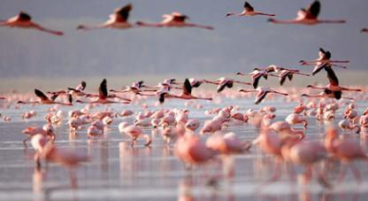
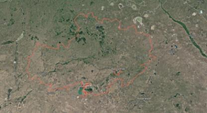
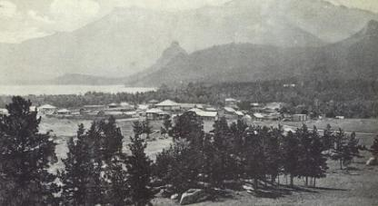

Аумақтың жер бедері әртүрлі: басым көп бөлігін жазық дала, ұсақшоқылық жерлер, шамалы тармақталған және көлдік аңғарлар мен орман жамылған таулар алып жатыр.Облыстың ауа-райы шұғыл континентальды...
АҚМОЛА ОБЛЫСЫ ТУРАЛЫ


Аумақтың рельефі әр түрлі: оның көп бөлігін далалар, кішігірім төбелер, жазық және өзен аңғарлары, ормандармен көмкерілген таулар алып жатыр. Аймақтың климаты шұғыл континенталды. Жаз қысқа, жылы...

Ақмола облысы 1939 жылы пайда болды. Ауданы 146,2 мың шаршы км тұрады. Облыс орталығы – Көкшетау қаласы. Халық саны – 2017 жыл көрсеткіші бойынша 738 017. Ұлттық құрамы: мың адам (%): қазақтар 50,99%, орыстар 33,13%, украиндаp...